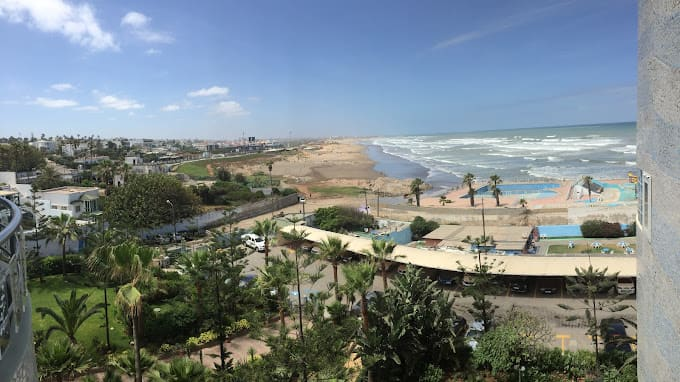
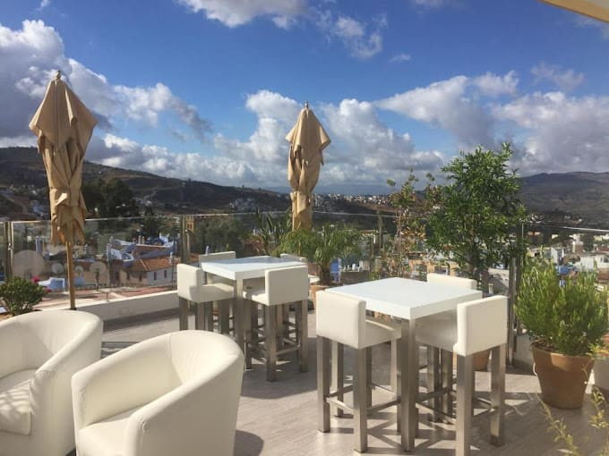

The short answer: Citizens of the United States, Canada and Australia don't need a visa for tourist stays in Morocco of up to 90 days, but you should carry a passport valid for at least six months. From North America, Royal Air Maroc flies nonstop to Casablanca from New York, Washington, Miami, Toronto, Montreal and, since 2026, Los Angeles. From Australia there are no direct flights, so most travelers connect through the Gulf or Europe. Plan at least 9 to 10 days on the ground, so the long flight is worth it, and allow a gentle first day for jet lag.
For travelers from North America and Australia, Morocco feels wonderfully far from home, but getting there is simpler than many people expect. This guide covers the practical planning questions we're asked most often by guests from the United States, Canada and Australia, before they choose their route.
Entry Requirements: Visas and Passports
- Visa: US, Canadian and Australian citizens can visit Morocco for tourism for up to 90 days without a visa. You'll get an entry stamp on arrival.
- Passport validity: carry a passport valid for at least six months beyond your arrival date, with a blank page for the stamp. Airlines often apply this rule at check-in even when the official requirement is shorter.
- Arrival card: you may be asked to fill in an entry form with your address in Morocco, so keep your first hotel's name and address handy.
- Always check official sources before you travel: travel.state.gov (US), travel.gc.ca (Canada) and Smartraveller (Australia). Requirements can change.

Flying From the USA and Canada
Morocco is closer to the East Coast than many travelers realize. Royal Air Maroc, the national airline, flies nonstop to Casablanca from:
- New York (JFK)
- Washington, D.C. (Dulles)
- Miami
- Toronto
- Montreal
- Los Angeles, a route launched in 2026
Flights from the East Coast and eastern Canada are typically overnight, landing in Casablanca in the morning. Schedules and frequencies change by season, so check the airline's current timetable. One-stop connections through European hubs such as Paris, Madrid, Lisbon, London or Amsterdam are also common, and these often land directly in Marrakech or Fes.
Flying From Australia
There are no direct flights between Australia and Morocco. Most Australians connect through a Gulf hub such as Dubai or Doha, through Istanbul, or through a European city, then on to Casablanca or Marrakech. Total travel time is long, usually a full day or more, so it's worth:
- breaking the journey with a stopover night;
- combining Morocco with Europe on the same trip;
- planning a longer stay of 12 days or more so the journey is worth it.
Which Moroccan Airport Should You Fly Into?
| Airport | Best for | Notes |
|---|---|---|
| Casablanca (CMN) | Nonstop flights from North America | A natural start for routes north to Rabat, Chefchaouen and Fes |
| Marrakech (RAK) | European connections, the south and the Sahara | Ideal for routes over the High Atlas to the desert |
| Fes (FEZ) | Starting in the north | The closest major airport to the Merzouga dunes (the small regional airport at Errachidia is closer still) |
| Tangier (TNG) | Combining with Spain | Close to Chefchaouen and the north coast |
| Agadir (AGA) | Beach plus desert | Good for southern routes |
The best plan is usually an "open jaw": arrive in one city and leave from another, for example arriving in Casablanca and departing from Marrakech, so you never retrace your route. Our tailored tours start from Casablanca, Marrakech, Fes, Tangier and Agadir. If the Sahara is your main goal, you can also connect in Casablanca and fly much closer to the dunes. See our guide to flying to the Sahara via Errachidia or Ouarzazate.
Jet Lag and Pacing Your First Days
Morocco is five to six hours ahead of New York, eight to nine hours ahead of Los Angeles and nine to ten hours behind Sydney, depending on the season. Morocco keeps GMT+1 for most of the year and moves its clocks back an hour during Ramadan. A few tips:
- Make day one easy. A private airport transfer, an afternoon rest at your riad and an early dinner.
- Don't schedule a long drive on day two. Start with a city day, such as Rabat or Marrakech, before heading into the mountains.
- Get outside in the morning light to reset your body clock.
Most of our journeys include a private airport pickup, so your driver is waiting when you land. Our 8-day Imperial Cities and Sahara tour, for example, begins with a pickup at Casablanca's Mohammed V airport.
How Long to Stay, and When to Go
- From North America: 9 to 12 days on the ground is ideal. It covers the imperial cities, the Sahara and Marrakech without rushing. See our 10-day itinerary.
- From Australia: 12 to 15 days, or combine Morocco with Europe.
- When: spring (March to May) and autumn (September to November) have the best weather. Northern-hemisphere spring break and fall are popular with North Americans, so book early. For Australians, Morocco's spring and autumn line up with their own autumn and spring school holidays.
- Winter is sunny but cold at night. See our winter guide.

Money, Phones and Practical Details
- Currency: the Moroccan dirham (MAD) is a closed currency, so you'll get it on arrival from ATMs or exchange desks. Cards are accepted in hotels and larger shops, but you'll need cash for small purchases and tips.
- Phones: buying a local SIM or eSIM on arrival is easy and inexpensive. Wi-Fi is available in most riads and hotels, and sometimes at desert camps.
- Power: 220V, with European-style two-pin plugs (types C and E). Bring adapters.
- Language: Arabic and Amazigh (Berber) are the official languages, and French is widely spoken. English is common in tourism, and your guides will speak it.
- Insurance: take out travel insurance with medical evacuation cover. US Medicare doesn't generally cover care abroad.
- Safety: read our honest Morocco safety guide, including what each government's advisory means.
Combining Morocco With Spain or Portugal
Many North American and Australian travelers combine Morocco with southern Spain or Portugal. Short flights connect Madrid, Barcelona, Seville, Málaga and Lisbon with Moroccan cities, and ferries cross the Strait of Gibraltar to Tangier. A route that enters through Tangier and finishes in Marrakech works especially well. Our 12-day Grand Morocco Tour from Tangier and the shorter 9-day journey from Tangier via Chefchaouen are designed for exactly this.
Plan Your Trip With a Local Team
Once your flights are set, we'll build the rest around them: airport pickup, private driver-guide, riads, desert camp and every transfer in between. Send us your arrival and departure details, and we'll design a private itinerary and reply within 24 hours.